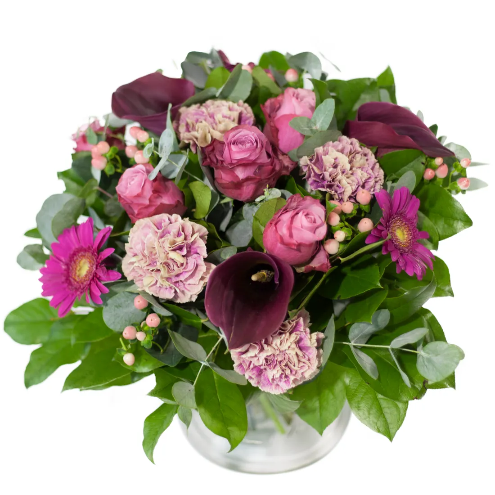
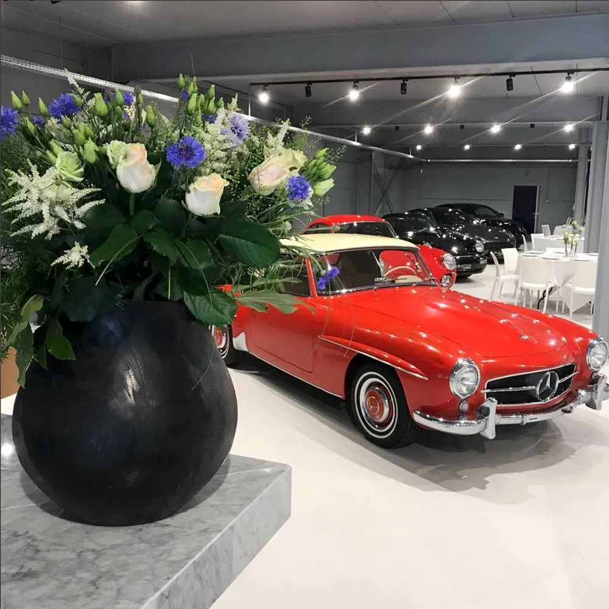
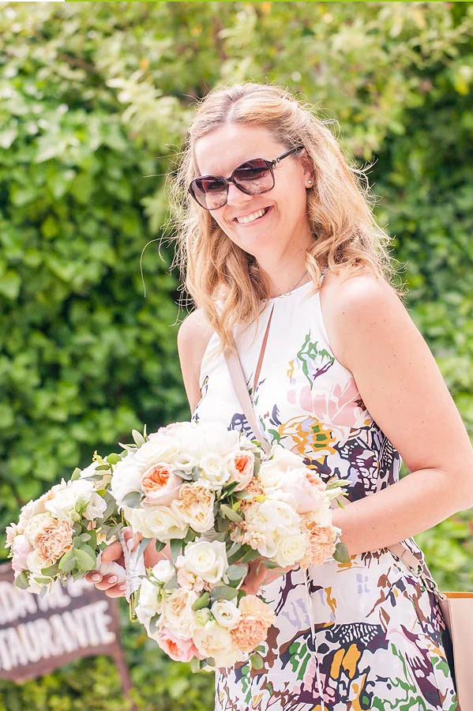
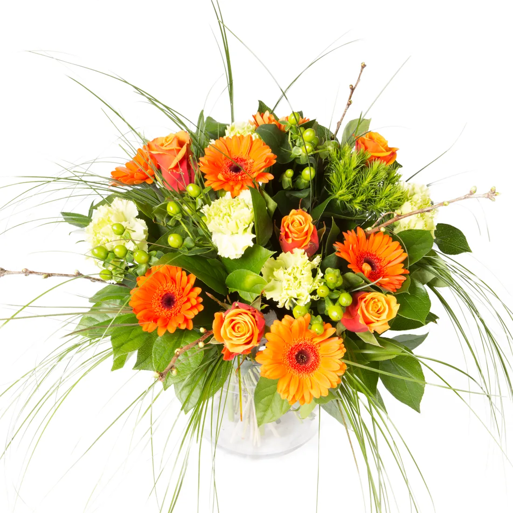
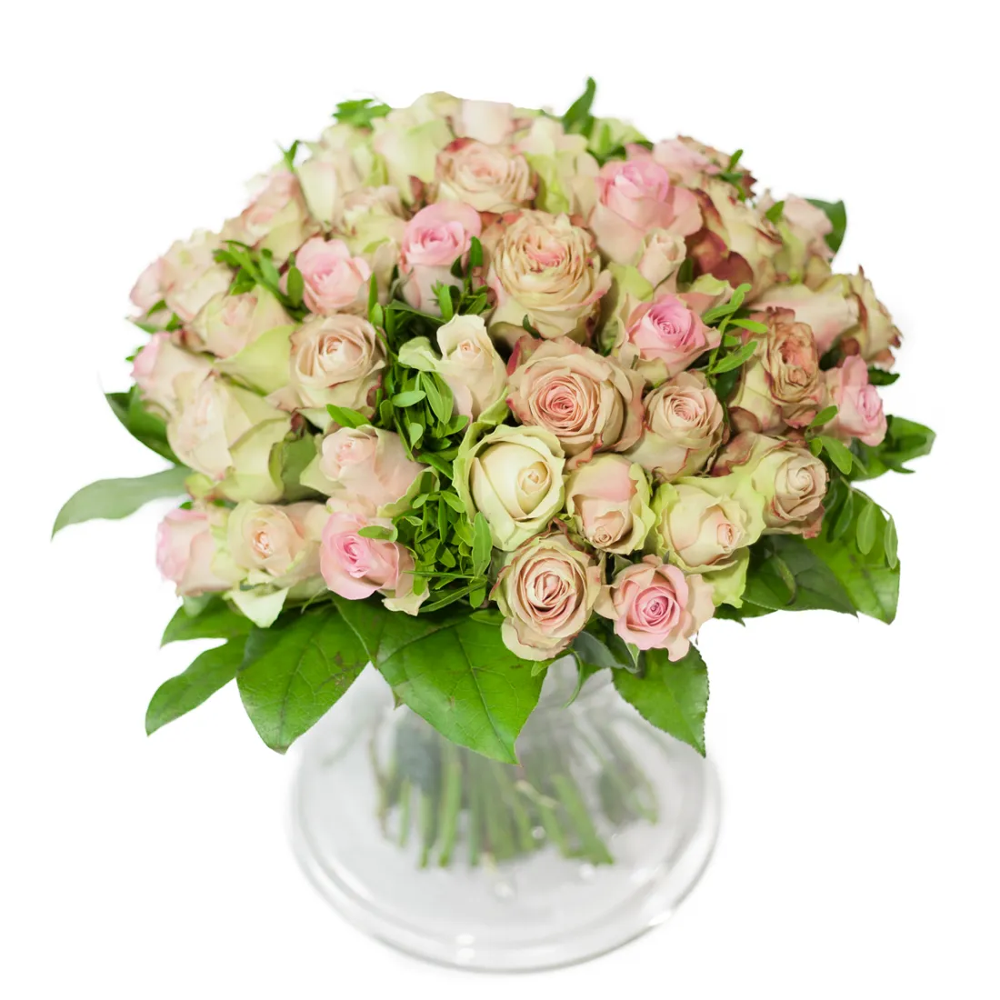
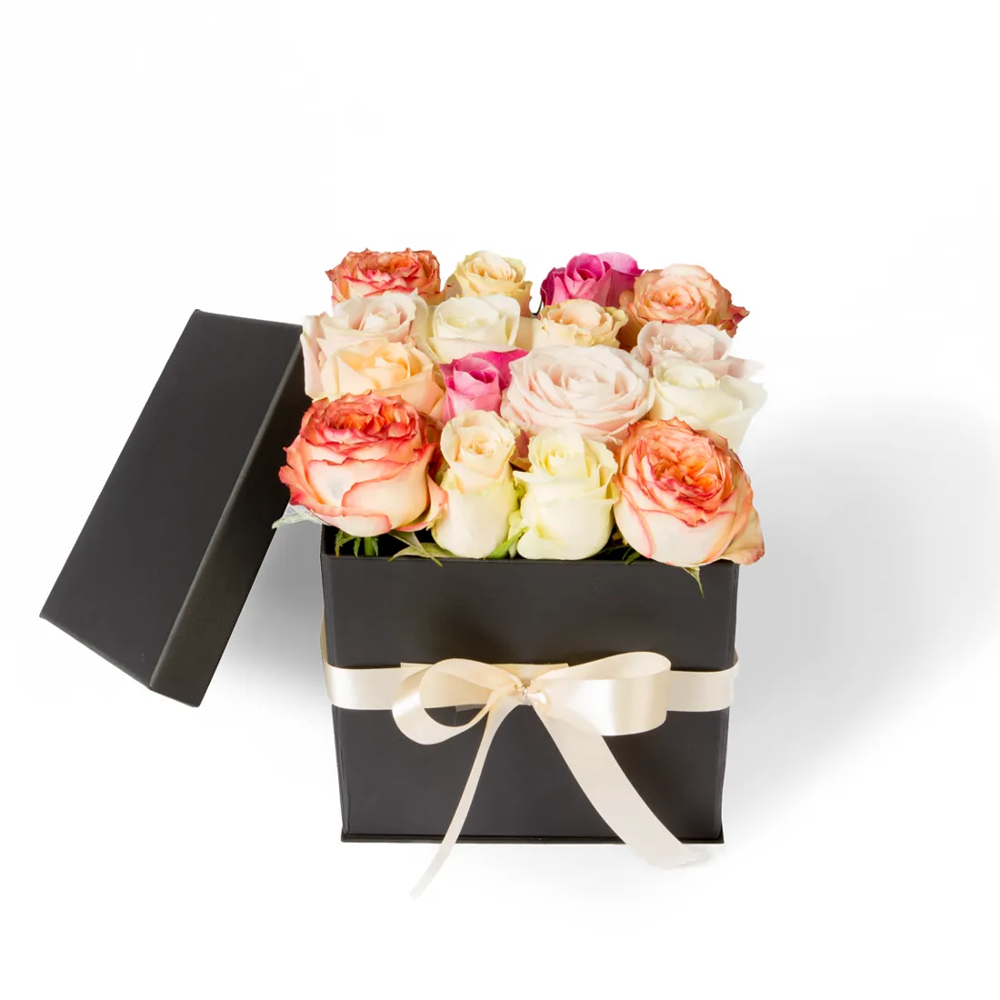
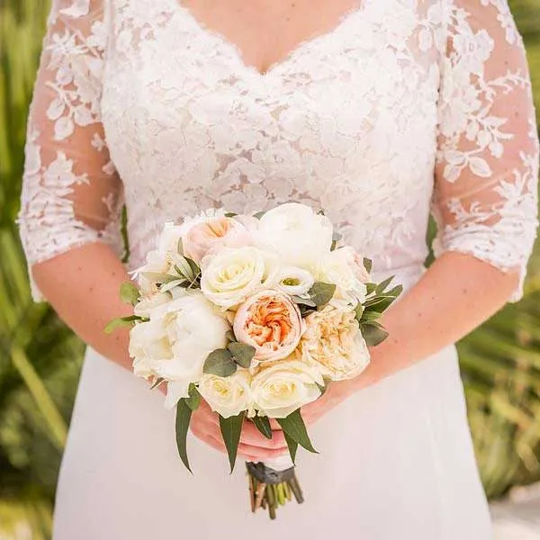
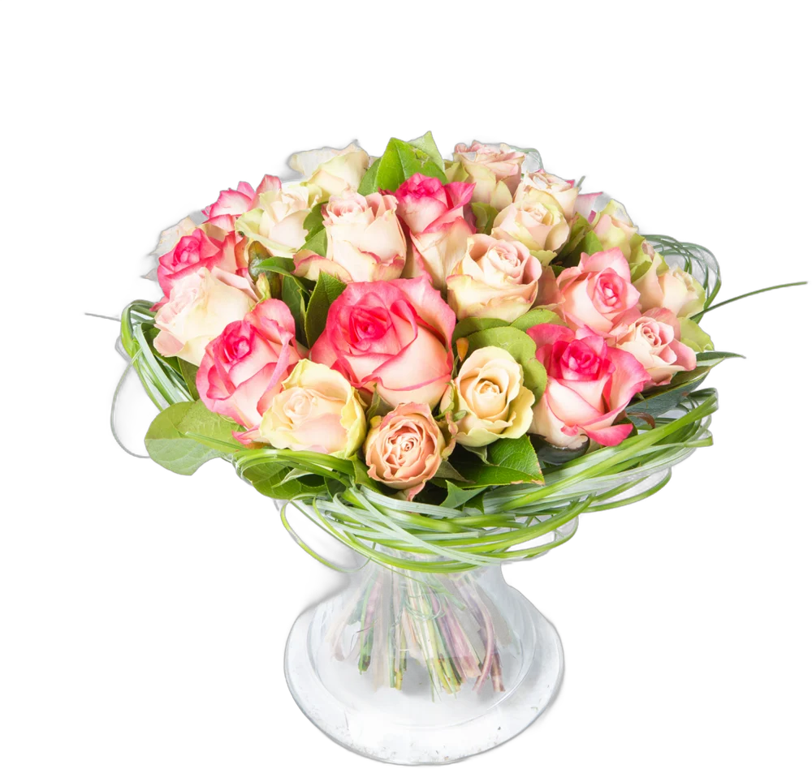
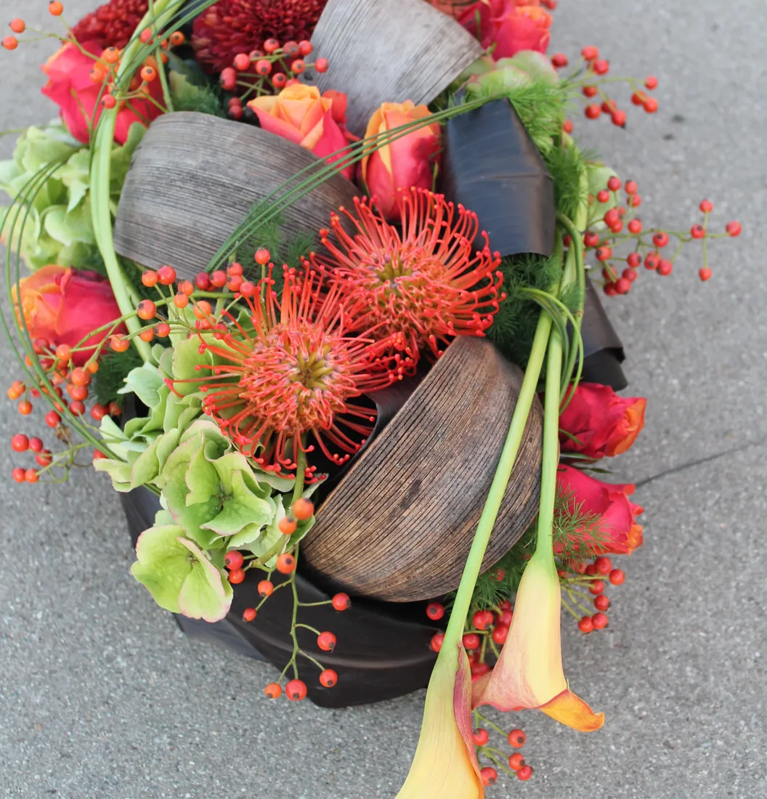
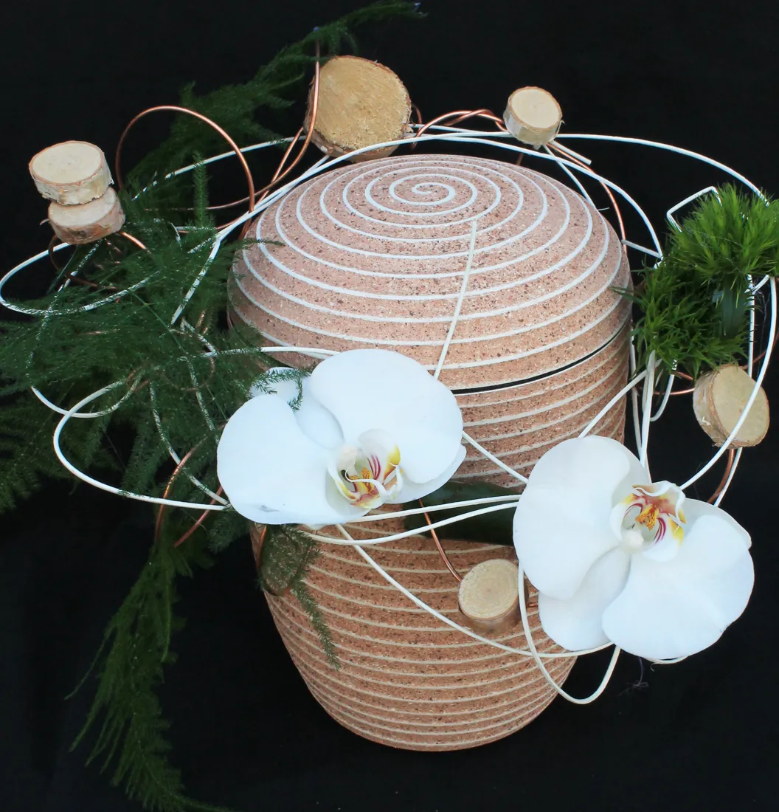

Bloemen vanuit het hart
Donkerroze boeket met anjers, calla's en hypericum-bessen.
€45Bestel

Straks centraal in jouw woonkamer. Bij Rozen De Groof werken we enkel met kraakverse bloemen, zodat je boeket langer mooi blijft. Kies in de winkel, laat er eentje op maat maken of bestel online.

Rozen De Groof begon in 1994 als speciaalzaak in rozen. Vandaag is het een hartelijke familiezaak waar de liefde voor bloemen van de ouders op de dochter werd doorgegeven. Karen Belmans leidt de zaak en bouwde de winkel uit tot een echt bloemenparadijs, samen met een team van geschoolde floristen.
Je vindt hier uitbundige boeketten en bloemstukken, binnenplanten, vazen en potten. Maar je bent net zo welkom voor één rode roos of een klein ruikertje tulpen.
Geen tijd om langs te komen? Bestel je boeket online, ook na de sluitingsuren. Een greep uit onze favorieten.

Donkerroze boeket met anjers, calla's en hypericum-bessen.

Warm boeket met gerbera's, rozen, anjers en groene bessen.

Landelijk boeket in pasteltinten, voor wie het zacht houdt.

Rozen in een cadeaudoos, mooi om zo te geven.
Bij feestelijke en bij droevige momenten horen bloemen. We luisteren naar wat jij wil en maken het op maat.

Van bruidsboeket tot de bloemen op elke tafel van je trouwfeest.

Ook bedrijven en eventmanagers kleden we aan, tot in de showroom.

Bloemen die een dierbare vergezellen op de laatste reis.
Elke maand, behalve in juli en augustus, organiseren we een nieuwe workshop. Je werkt met verse bloemen en gaat naar huis met een prachtig eigen bloemstuk. Breng gewoon je mesje, schaar en snoeischaar mee, de rest ligt klaar.

★★★★★“Onze idee was niet alledaags (+ 70 verschillende soorten vaasjes), maar Karen had alles perfect begrepen, dacht mee met ons (…)”
★★★★★“Een winkel met prachtige en kwaliteitsvolle snijbloemen. Vaste binnenplanten, vazen en potten zijn ook in vele variaties verkrijgbaar.”
★★★★★“Top kwaliteit en scherpe prijzen. Zeker aangeraden. Mijn vrouw is altijd blij als ze bloemen van hier krijgt.”
Onze ruime winkel is zes dagen op zeven open. Daarbuiten bestel je gewoon via de webshop.
Otterbeekweg 4 (voorheen Mussepi 45)
2860 Sint-Katelijne-Waver
015 55 68 80 · info@rozendegroof.be
Ik maakte deze demo voor jullie om te tonen wat er kan. Na een kort gesprek maak ik er iets veel persoonlijkers van, helemaal naar jullie wens.
Vrijblijvend. Ik kom langs of we bellen.
Op maat, op jullie eigen domein.
Geen voorschot. Jullie betalen pas als alles klaar is.
Hosting, domeinnaam en kleine wijzigingen, zoals nieuwe openingsuren.
Omdat een voorbeeld meer zegt dan een mail. Zo zien jullie meteen wat er kan, en het kost jullie niets.
Nee. Het gesprek is vrijblijvend. Vinden jullie het niks, dan is het daarmee gedaan.
Na ons gesprek staat jullie site binnen 10 tot 14 dagen online.
Zeker. Jullie domeinnaam kan gewoon blijven, de nieuwe site komt in de plaats van de oude.
Nee, dat doe ik op basis van ons gesprek. Eigen foto's zijn mooi meegenomen, maar niet nodig om te starten.